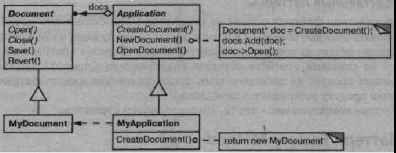

Паттерн Factory Method
Название и классификация паттерна
Фабричный метод - паттерн, порождающий классы.
Назначение
Определяет интерфейс для создания объекта, но оставляет подклассам решение о том, какой класс инстанцировать. Фабричный метод позволяет классу делегировать инстанцирование подклассам.
Известен также под именем
Virtual Constructor (виртуальный конструктор).
Мотивация
Каркасы пользуются абстрактными классами для определения и поддержания отношений между объектами. Кроме того, каркас часто отвечает за создание самих объектов.
Рассмотрим каркас для приложений, способных представлять пользователю сразу несколько документов. Две основных абстракции в таком каркасе - это классы Application и Document. Оба класса абстрактные, поэтому клиенты должны порождать от них подклассы для создания специфичных для приложения реализаций. Например, чтобы создать приложение для рисования, мы определим классы DrawingApplication и DrawingDocument. Класс Application отвечает за управление документами и создает их по мере необходимости, допустим, когда пользователь выбирает из меню пункт Open (открыть) или New (создать).
Поскольку решение о том, какой подкласс класса Document инстанцировать, зависит от приложения, то Application не может «предсказать», что именно понадобится. Этому классу известно лишь, когда нужно инстанцировать новый документ, а не какой документ создать. Возникает дилемма: каркас должен инстанцировать классы, но «знает» он лишь об абстрактных классах, которые инстанцировать нельзя.
Решение предлагает паттерн фабричный метод. В нем инкапсулируется информация о том, какой подкласс класса Document создать, и это знание выводится за пределы каркаса.
Подклассы класса Application переопределяют абстрактную операцию CreateDocument таким образом, чтобы она возвращала подходящий подкласс класса Document. Как только подкласс Application инстанцирован, он может инстанцировать специфические для приложения документы, ничего не зная об их классах. Операцию CreateDocument мы называем фабричным методом, поскольку она отвечает за «изготовление» объекта.
Применимость
Используйте паттерн фабричный метод, когда:
- классу заранее неизвестно, объекты каких классов ему нужно создавать;
- класс спроектирован так, чтобы объекты, которые он создает, специфицировались подклассами;
- класс делегирует свои обязанности одному из нескольких вспомогательных подклассов, и вы планируете локализовать знание о том, какой класс при¬нимает эти обязанности на себя.
Структура
Участники
- Product (Document) - продукт:
- - определяет интерфейс объектов, создаваемых фабричным методом;
- ConcreteProduct (MyDocument) - конкретный продукт:
- - реализует интерфейс Product;
- Creator (Application) - создатель:
- - объявляет фабричный метод, возвращающий объект типа Product. Creator может также определять реализацию по умолчанию фабричного метода, который возвращает объект ConcreteProduct;
- - может вызывать фабричный метод для создания объекта Product.
- ConcreteCreator (MyApplication) - конкретный создатель:
- - замещает фабричный метод, возвращающий объект ConcreteProduct.
Отношения
Создатель «полагается» на свои подклассы в определении фабричного метода, который будет возвращать экземпляр подходящего конкретного продукта.
Результаты
Фабричные методы избавляют проектировщика от необходимости встраивать в код зависящие от приложения классы. Код имеет дело только с интерфейсом класса Product, поэтому он может работать с любыми определенными пользователями классами конкретных продуктов.
Потенциальный недостаток фабричного метода состоит в том, что клиентам, возможно, придется создавать подкласс класса Creator для создания лишь одного объекта ConcreteProduct. Порождение подклассов оправдано, если клиенту так или иначе приходится создавать подклассы Creator, в противном случае клиенту придется иметь дело с дополнительным уровнем подклассов.
А вот еще два последствия применения паттерна срабричный метод:
- предоставляет подклассам операции-зацепки (hooks). Создание объектов внутри класса с помощью фабричного метода всегда оказывается более гибким решением,
чем непосредственное создание. Фабричный метод создает в подклассах операции-зацепки для предоставления расширенной версии объекта.
В примере с документом класс Document мог бы определить фабричный метод CreateFileDialog, который создает диалоговое окно для выбора файла существующего документа. Подкласс этого класса мог бы определить специализированное для приложения диалоговое окно, заместив этот фабричный метод. В данном случае фабричный метод не является абстрактным, а содержит разумную реализацию по умолчанию;
- соединяет параллельные иерархии. В примерах, которые мы рассматривали до сих пор, фабричные методы вызывались только создателем. Но это совершенно необязательно:
клиенты тоже могут применять фабричные методы, особенно при наличии параллельных иерархий классов.
Параллельные иерархии возникают в случае, когда класс делегирует часть своих обязанностей другому классу, не являющемуся производным от него. Рассмотрим, например, графические фигуры, которыми можно манипулировать интерактивно: растягивать, двигать или вращать с помощью мыши. Реализация таких взаимодействий с пользователем - не всегда простое дело. Часто приходится сохранять и обновлять информацию о текущем состоянии манипуляций. Но это состояние нужно только во время самой манипуляции, поэтому помещать его в объект, представляющий фигуру, не следует. К тому же фигуры ведут себя по-разному, когда пользователь манипулирует ими. Например, растягивание отрезка может сводиться к изменению положения концевой точки, а растягивание текста - к изменению междустрочных интервалов.
При таких ограничениях лучше использовать отдельный объект-манипулятор Manipulator, который реализует взаимодействие и контролирует его текущее состояние. У разных фигур будут разные манипуляторы, являющиеся подклассом Manipulator. Получающаяся иерархия класса Manipulator параллельна (по крайней мере, частично) иерархии класса Figure.
Класс Figure предоставляет фабричный метод CreateManipulator, который позволяет клиентам создавать соответствующий фигуре манипулятор. Подклассы Figure замещают этот метод так, чтобы он возвращал подходящий для них подкласс Manipulator. Вместо этого класс Figure может реализовать CreateManipulator так, что он будет возвращать экземпляр класса Manipulator по умолчанию, а подклассы Figure могут наследовать это умолчание. Те классы фигур, которые функционируют по описанному принципу, не нуждаются в специальном манипуляторе, поэтому иерархии параллельны только отчасти.
Обратите внимание, как фабричный метод определяет связь между обеими иерархиями классов. В нем локализуется знание о том, какие классы способны работать совместно.
Реализация
Рассмотрим следующие вопросы, возникающие при использовании паттерна фабричный метод:
- две основных разновидности паттерна. Во-первых, это случай, когда класс С г eat or'является абстрактным и не содержит реализации объявленного в нем фабричного метода. Вторая возможность: Creator - конкретный класс, в котором по умолчанию есть реализация фабричного метода. Редко, но встречается и абстрактный класс, имеющий реализацию по умолчанию; В первом случае для определения реализации необходимы подклассы, поскольку никакого разумного умолчания не существует. При этом обходится проблема, связанная с необходимостью инстанцировать заранее неизвестные классы. Во втором случае конкретный класс Creator использует фабричный метод, главным образом ради повышения гибкости. Выполняется правило: «Создавай объекты в отдельной операции, чтобы подклассы могли подменить способ их создания». Соблюдение этого правила гарантирует, что авторы подклассов смогут при необходимости изменить класс объектов, инстанцируемых их родителем;
- параметризованные фабричные методы. Это еще один вариант паттерна, который позволяет фабричному методу создавать разные виды продуктов. Фабричному
методу передается параметр, который идентифицирует вид создаваемого объекта. Все объекты, получающиеся с помощью фабричного метода, разделяют
общий интерфейс Product. В примере с документами класс Application может поддерживать разные виды документов. Вы передаете методу CreateDocument
лишний параметр, который и определяет, документ какого вида нужно создать.
В каркасе Unidraw для создания графических редакторов [VL90] используется именно этот подход для реконструкции объектов', сохраненных на диске. Unidraw определяет класс Creator с фабричным методом Create, которому в качестве аргумента передается идентификатор класса, определяющий, какой класс инстанцировать. Когда Unidraw сохраняет объект на диске, он сначала записывает идентификатор класса, а затем его переменные экземпляра. При реконструкции объекта сначала считывается идентификатор класса. Прочитав идентификатор класса, каркас вызывает операцию Create, передавая ей этот идентификатор как параметр. Create ищет конструктор соответствующего класса и с его помощью производит инстанцирование. И наконец, Create вызывает операцию Read созданного объекта, которая считывает с диска остальную информацию и инициализирует переменные экземпляра.
Параметризованный фабричный метод в общем случае имеет следующий вид (здесь My Product и Your Product - подклассы Product):
class Creator { public: virtual Product* Create(Productld); }; Product* Creator::Create (Productld id) { if (id == MINE) return new MyProduct; if (id == YOURS) return new YourProduct; // выполнить для всех остальных продуктов... return 0; }Замещение параметризованного фабричного метода позволяет легко и избирательно расширить или заменить продукты, которые изготавливает создатель. Можно завести новые идентификаторы для новых видов продуктов или ассоциировать существующие идентификаторы с другими продуктами. Например, подкласс MyCreator мог бы переставить местами MyProduct и YourProduct для поддержки третьего подкласса Their Product:
Product* MyCreator::Create (Productld id) { if (id == YOURS) return new MyProduct; if (id == MINE) return new YourProduct; // N.B.: YOURS и MINE переставлены if (id == THEIRS) return new TheirProduct; return Creator::Create(id); // вызывается, если больше ничего //не осталось }Обратите внимание, что в самом конце операция вызывает метод Create родительского класса. Так делается постольку, поскольку MyCreator: : Create обрабатывает только продукты YOURS, MINE и THEIRS иначе, чем родительский класс. Поэтому MyCreator расширяет некоторые виды создаваемых продуктов, а создание остальных поручает своему родительскому классу;
- языково-зависимые вариации и проблемы. В разных языках возникают собственные интересные варианты и некоторые нюансы.
Так, в программах на Smalltalk часто используется метод, который возвращает класс подлежащего инстанцированию объекта. Фабричный метод Creator может воспользоваться возвращенным значением для создания продукта, a ConcreteCreator может сохранить или даже вычислить это значение. В результате привязка к типу конкретного инстанцируемого продукта ConcreteProduct происходит еще позже.
В версии примера Document на языке Smalltalk допустимо определить метод documentClass в классе Application. Данный метод возвращает подходящий класс Document для инстанцирования документов. Реализация метода documentClass в классе MyApplication возвращает класс MyDocument. Таким образом, в классе Application мы имеем
clientMethod document : = self documentClass new. documentClass self subclassResponsibilityа в классе MyApplication —
documentClass ^ MyDocumentчто возвращает класс MyDocument, который должно инстанцировать приложение Application.
Еще более гибкий подход, родственный параметризованным фабричным методам, заключается в том, чтобы сохранить подлежащий созданию класс в качестве переменной класса Application. В таком случае для изменения продукта не нужно будет порождать подкласс Application.
В C++ фабричные методы всегда являются виртуальными функциями, а часто даже исключительно виртуальными. Нужно быть осторожней и не вызывать фабричные методы в конструкторе класса Creator: в этот момент фабричный метод в производном классе ConcreteCreator еще недоступен. Обойти такую сложность можно, если получать доступ к продуктам только с помощью функций доступа, создающих продукт по запросу. Вместо того чтобы создавать конкретный продукт, конструктор просто инициализирует его нулем. Функция доступа возвращает продукт, но сначала проверяет, что он существует. Если это не так, функция доступа создает продукт. Подобную технику часто называют отложенной инициализацией. В следующем примере показана типичная реализация:
class Creator { public: Product* GetProduct() ; protected: virtual Product* CreateProduct(); private: Product* _product; }; Product* Creator: :GetProduct () { if (.product ==0) { _product = CreateProduct ( ) ; } return _product; } - использование шаблонов, чтобы не порождать подклассы. К сожалению, допустима ситуация, когда вам придется порождать подклассы только для того,
чтобы создать подходящие объекты-продукты. В C++ этого можно избежать, предоставив шаблонный подкласс класса Creator, параметризованный классом Product:
class Creator { public: virtual Product* CreateProduct () = 0; }; templateclass StandardCreator: public Creator { public: virtual Product* CreateProduct(); }; template Product* StandardCreator ::CreateProduct () { return new TheProduct; } С помощью данного шаблона клиент передает только класс продукта, по¬рождать подклассы от Creator не требуется:
class MyProduct : public Product { public: MyProduct() ; // ... }; StandardCreatormyCreator ; - соглашения об именовании. На практике рекомендуется применять такие соглашения об именах, которые дают ясно понять, что вы пользуетесь фабричными методами. Например, каркас МасАрр на платформе Macintosh [App89] всегда объявляет абстрактную операцию, которая определяет фабричный метод, в виде Class* DoMakeClass ( ), где Class - это класс продукта.
Пример кода
Функция CreateMaze строит и возвращает лабиринт. Одна из связанных с ней проблем состоит в том, что классы лабиринта, комнат, дверей и стен жестко «зашиты» в данной функции. Мы введем фабричные методы, которые позволят выбирать эти компоненты подклассам.
Сначала определим фабричные методы в игре MazeGame для создания объектов лабиринта, комнат, дверей и стен:
class MazePrototypeFactory :
public:
Maze* CreateMaze();
// фабричные методы:
virtual Maze* MakeMazeO const
{ return new Maze; }
virtual Room* MakeRoom(int n) const
{ return new Room(n); }
virtual Wall* MakeWalK) const
{ return new Wall; }
virtual Door* MakeDoor(Room* rl, Room* r2) const
{ return new Door(rl, r2); }
};
Каждый фабричный метод возвращает один из компонентов лабиринта. Класс MazeGame предоставляет реализации по умолчанию, которые возвращают простейшие варианты лабиринта, комнаты, двери и стены.
Теперь мы можем переписать функцию CreateMaze с использованием этих фабричных методов:
Maze* MazeGame::CreateMaze () {
Maze* aMaze = MakeMaze();
Room* rl = MakeRoom(l);
Room* r2 = MakeRoom(2) ;
Door* theDoor = MakeDoor(rl, r2) ;
aMaze->AddRoom(rl);
aMaze->AddRoom(r2);
rl->SetSide(North, MakeWall());
rl->SetSide(East, theDoor);
rl->SetSide(South, MakeWall());
rl->SetSide(West, MakeWall());
r2->SetSide(North, MakeWall());
r2->SetSide(East, MakeWall());
r2->SetSide(South, MakeWall());
r2->SetSide(West, theDoor);
return aMaze;
}
В играх могут порождаться различные подклассы MazeGame для специализации частей лабиринта. В этих подклассах допустимо переопределение некоторых или всех методов, от которых зависят разновидности продуктов. Например, в игре BombedMazeGame продукты Room и Wall могут быть переопределены так, чтобы возвращать комнату и стену с заложенной бомбой:
class BombedMazeGame : public MazeGame {
public:
BombedMazeGame();
virtual Wall* MakeWall() const
{ return new BombedWall; }
virtual Room* MakeRoom(int n) const
{ return new RoomWithABomb(n); }
};
А в игре Enchant edMazeGame допустимо определить такие варианты:
class EnchantedMazeGame : public MazeGame {
public:
EnchantedMazeGame();
virtual Room* MakeRoomdnt n) const
{ return new EnchantedRoom(n, CastSpell()); }
virtual Door* MakeDoor(Room* rl, Room* r2) const
{ return new DoorNeedingSpell(rl, r2); }
protected:
Spell* CastSpell() const;
};
Известные применения
Фабричные методы в изобилии встречаются в инструментальных библиотеках и каркасах. Рассмотренный выше пример с документами - это типичное применение в каркасе МасАрр и библиотеке ЕТ++ [WGM88]. Пример с манипулято¬ром заимствован из каркаса Unidraw.
Класс View в схеме модель/вид/контроллер из языка Smalltalk-80 имеет ме¬тод defaultController, который создает контроллер, и этот метод выглядит как фабричный [РагЭО]. Но подклассы View специфицируют класс своего контроллера по умолчанию, определяя метод def aultControllerClass, возвращающий класс, экземпляры которого создает defaultController. Таким образом, реальным фабричным методом является def aultControllerClass, то есть метод, который должен переопределяться в подклассах.
Более необычным является пример фабричного метода parserClass, тоже взятый из Smalltalk-80, который определяется поведением Behavior (суперкласс всех объектов, представляющих классы). Он позволяет классу использовать специализированный анализатор своего исходного кода. Например, клиент может определить класс SQLParser для анализа исходного кода класса, содержащего встроенные предложения на языке SQL. Класс Behavior реализует par serClass так, что тот возвращает стандартный для Smalltalk класс анализатора Parser. Класс же, включающий предложения SQL, замещает этот метод (как метод класса) и возвращает класс SQLParser.
Система Orbix ORB от компании IONA Technologies [ION94] использует фабричный метод для генерирования подходящих заместителей (см. паттерн заместитель) в случае, когда объект запрашивает ссылку на удаленный объект. Фабричный метод позволяет без труда заменить подразумеваемого заместителя, например таким, который применяет кэширование на стороне клиента.
Родственные паттерны
Абстрактная фабрика часто реализуется с помощью фабричных методов. Пример в разделе «Мотивация» из описания абстрактной фабрики иллюстрирует также и паттерн фабричные методы.
Паттерн фабричные методы часто вызывается внутри шаблонных методов. В примере с документами NewDocument - это шаблонный метод.
Прототипы не нуждаются в порождении подклассов от класса Creator. Однако им часто бывает необходима операция Initialize в классе Product. Treator использует Initialize для инициализации объекта. Фабричному методу такая операция не требуется.